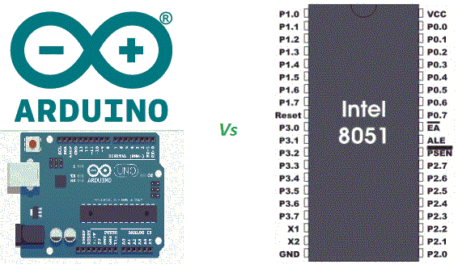

In 1981, Intel introduced an 8-bit microcontroller called the 8051. It was referred as system on a chip because it had 128 bytes of chip data RAM, 4KB of on-chip ROM, two timers, one serial port, and 4 ports (8-bit wide), all on a single chip.[1]
It has been 39 years since Intel introduced this microcontroller and technology has since progressed immensely.For example ,take the Arduino- a project started at the Interaction Design Institute Ivrea (IDII) in Ivrea, Italy and thereafter prepared the first Arduino by 2005.Since then,the Arduino has become the number one choice for electronics makers, especially for developing solutions for the IoT marketplace, which has been predicted to become a $6 trillion market by 2021.[2]
As long as mankind innovates there will always be a better technology awaiting us. We just have to think that the past lacked what we have now and the future will have something we can innovate now.-Reuben B.